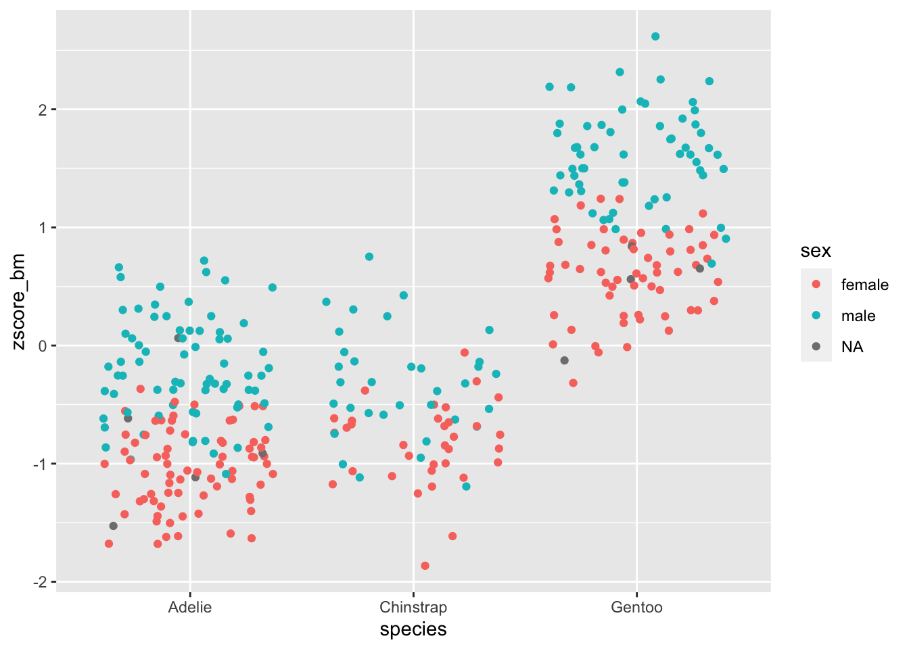
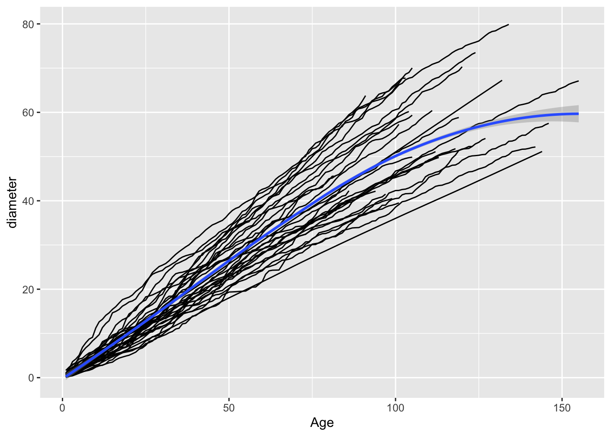

library(tidyverse) # this loads both dplyr and tidyr, along with other packages
library(palmerpenguins) # a nice data set to play with4 Data wrangling
4.1 Goal
Learn how to manipulate large data sets by writing efficient, consistent, and compact code. Introduce the use of dplyr, tidyr, and the “pipe” operator %>%. Effortlessly produce statistics for grouped data. Massage data into “tidy” form.
4.2 What is data wrangling?
As biologists living in the XXI century, we are often faced with tons of data, possibly replicated over several organisms, treatments, or locations. We would like to streamline and automate our analysis as much as possible, writing scripts that are easy to read, fast to run, and easy to debug. Base R can get the job done, but often the code contains complicated operations, and a lot of $ signs and brackets.
We’re going to learn about the packages dplyr and tidyr, which are part of tidyverse and can be used to manipulate large data frames in a simple and straightforward way. These tools are also much faster than the corresponding base R commands, are very compact, and can be concatenated into “pipelines”.
To start, we need to import the libraries:
# make sure function select is the right one...
select <- dplyr::selectWe are going to use the data set penguins from the package palmerpenguins, which we have already seen last week.
4.3 A new data type, tibble
The data is stored in a “tibble”:
class(penguins)[1] "tbl_df" "tbl" "data.frame"In fact, dplyr ships with a new data type, called a tibble. To convert a data.frame into a tibble, use as_tibble:
# load a data frame
data("trees")
class(trees)
trees <- as_tibble(trees)
class(trees)The nice feature of tbl objects is that they will print only what fits on the screen, and also give you useful information on the size of the data, as well as the type of data in each column. Other than that, a tbl object behaves very much like a data.frame. In some rare cases, you want to transform the tbl back into a data.frame. For this, use the function as.data.frame(tbl_object).
We can take a look at the data using one of several functions:
head(dt)shows the first few rowstail(dt)shows the last few rowsglimpse(dt)a summary of the data (similar tostrin base R)View(dt)open in spreadsheet-like window
4.4 Selecting rows and columns
There are many ways to subset the data, either by row (subsetting the observations), or by column (subsetting the variables). For example, let’s select only the rows with observations from the island Torgersen:
filter(penguins, island == "Torgersen")# A tibble: 52 × 8
species island bill_length_mm bill_depth_mm flipper_length_mm body_mass_g
<fct> <fct> <dbl> <dbl> <int> <int>
1 Adelie Torgersen 39.1 18.7 181 3750
2 Adelie Torgersen 39.5 17.4 186 3800
3 Adelie Torgersen 40.3 18 195 3250
4 Adelie Torgersen NA NA NA NA
5 Adelie Torgersen 36.7 19.3 193 3450
6 Adelie Torgersen 39.3 20.6 190 3650
7 Adelie Torgersen 38.9 17.8 181 3625
8 Adelie Torgersen 39.2 19.6 195 4675
9 Adelie Torgersen 34.1 18.1 193 3475
10 Adelie Torgersen 42 20.2 190 4250
# ℹ 42 more rows
# ℹ 2 more variables: sex <fct>, year <int>We have 52 observations. We have used the command filter(tbl, conditions) to select certain observations. We can combine several conditions, by listing them side by side, possibly using logical operators.
Exercise: what does this do?
filter(penguins, bill_length_mm > 40, bill_depth_mm > 20, sex == male)
We can also select particular variables (columns) using the function select(tbl, cols to select). For example, select species and island:
select(penguins, species, island)# A tibble: 344 × 2
species island
<fct> <fct>
1 Adelie Torgersen
2 Adelie Torgersen
3 Adelie Torgersen
4 Adelie Torgersen
5 Adelie Torgersen
6 Adelie Torgersen
7 Adelie Torgersen
8 Adelie Torgersen
9 Adelie Torgersen
10 Adelie Torgersen
# ℹ 334 more rowsHow many species are represented in the data set? We can use the function distinct(tbl, cols to select) to retain only the rows that differ from each other:
distinct(select(penguins, species))# A tibble: 3 × 1
species
<fct>
1 Adelie
2 Gentoo
3 ChinstrapShowing that there are three species, once we removed the duplicates. There are many other ways to subset observations:
slice_sample(tbl, howmany, replace = TRUE)samplehowmanyrows at random (with replacement)sample_sample(tbl, proportion, replace = FALSE)sample a certain proportion (e.g.0.2for 20%) of rows at random without replacementslice(tbl, 5:20)extract the rows5to20slice_max(penguins, 10, body_mass_g)extract the first10rows, once ordered bybody_mass_g
More ways to select columns:
select(penguins, contains("mm"))select all columns containing the stringmmselect(penguins, -year, -body_mass_g)exclude the columnsyearandbody_mass_gselect(penguins, matches("length|bill"))select all columns whose names match a regular expression
4.5 Creating pipelines using %>%
We’ve been calling nested functions, such as distinct(select(penguins, species)). If you have to add another layer or two, the code would become unreadable. dplyr allows you to “un-nest” these functions and create a “pipeline” in which you concatenate commands separated by a special operator, %>%. For example:
penguins %>% # take a data table
select(species) %>% # select a column
distinct() # remove duplicates# A tibble: 3 × 1
species
<fct>
1 Adelie
2 Gentoo
3 Chinstrapdoes exactly the same operations as the command above, but is much more readable. By concatenating many commands, you can create incredibly complex pipelines while retaining readability. It is also quite easy to add another piece of the pipeline in between commands, or to comment some of the pipeline out.
Another advantage of pipelines is that they help with name completion. In fact, RStudio is running in the background your pipeline while you type it. Try typing dt %>% filter( and then start typing bill and press Tab: you will see the options to complete the column name; choose it with your arrows and hit Return. The back tick-marks will be added automatically if needed (e.g., column names containing spaces, or starting with a digit).
4.6 Producing summaries
Sometimes we need to calculate statistics on certain columns. For example, calculate the average body mass of the penguins. We can do this using summarise (you can use British or American spelling):
penguins %>%
summarise(avg = mean(body_mass_g, na.rm = TRUE))# A tibble: 1 × 1
avg
<dbl>
1 4202.# alternatively, drop_na(body_mass_g) removes all the observations for which
# body_mass_g is NA
penguins %>%
drop_na(body_mass_g) %>%
summarise(avg = mean(body_mass_g, na.rm = TRUE))# A tibble: 1 × 1
avg
<dbl>
1 4202.where we used na.rm = TRUE to ignore missing values. This command returns a tbl object with just the average body mass. You can combine multiple statistics (use first, last, min, max, n [count the number of rows], n_distinct [count the number of distinct rows], mean, median, var, sd, etc.):
penguins %>%
summarise(avg = mean(body_mass_g, na.rm = TRUE),
sd = sd(body_mass_g, na.rm = TRUE),
median = median(body_mass_g, na.rm = TRUE))# A tibble: 1 × 3
avg sd median
<dbl> <dbl> <dbl>
1 4202. 802. 40504.7 Summaries by group
One of the most useful features of dplyr is the ability to produce statistics for the data once subsetted by groups. For example, we would like to compute the average body mass by species and sex:
penguins %>%
drop_na() %>%
group_by(sex, species) %>%
summarise(mean = mean(body_mass_g, na.rm = TRUE))`summarise()` has grouped output by 'sex'. You can override using the `.groups`
argument.# A tibble: 6 × 3
# Groups: sex [2]
sex species mean
<fct> <fct> <dbl>
1 female Adelie 3369.
2 female Chinstrap 3527.
3 female Gentoo 4680.
4 male Adelie 4043.
5 male Chinstrap 3939.
6 male Gentoo 5485.showing that male penguins are heavier for the three species considered.
Exercise: find the average
bill_depth_mmandbill_length_mmbyspeciesandsex. Filter the data to consider only observations for the year 2008.
4.8 Ordering the data
To order the data according to one or more variables, use arrange():
penguins %>%
arrange(body_mass_g) # ascending# A tibble: 344 × 8
species island bill_length_mm bill_depth_mm flipper_length_mm body_mass_g
<fct> <fct> <dbl> <dbl> <int> <int>
1 Chinstrap Dream 46.9 16.6 192 2700
2 Adelie Biscoe 36.5 16.6 181 2850
3 Adelie Biscoe 36.4 17.1 184 2850
4 Adelie Biscoe 34.5 18.1 187 2900
5 Adelie Dream 33.1 16.1 178 2900
6 Adelie Torgers… 38.6 17 188 2900
7 Chinstrap Dream 43.2 16.6 187 2900
8 Adelie Biscoe 37.9 18.6 193 2925
9 Adelie Dream 37.5 18.9 179 2975
10 Adelie Dream 37 16.9 185 3000
# ℹ 334 more rows
# ℹ 2 more variables: sex <fct>, year <int>penguins %>%
arrange(desc(body_mass_g)) # descending# A tibble: 344 × 8
species island bill_length_mm bill_depth_mm flipper_length_mm body_mass_g
<fct> <fct> <dbl> <dbl> <int> <int>
1 Gentoo Biscoe 49.2 15.2 221 6300
2 Gentoo Biscoe 59.6 17 230 6050
3 Gentoo Biscoe 51.1 16.3 220 6000
4 Gentoo Biscoe 48.8 16.2 222 6000
5 Gentoo Biscoe 45.2 16.4 223 5950
6 Gentoo Biscoe 49.8 15.9 229 5950
7 Gentoo Biscoe 48.4 14.6 213 5850
8 Gentoo Biscoe 49.3 15.7 217 5850
9 Gentoo Biscoe 55.1 16 230 5850
10 Gentoo Biscoe 49.5 16.2 229 5800
# ℹ 334 more rows
# ℹ 2 more variables: sex <fct>, year <int>4.9 Renaming columns
To rename one or more columns, use rename():
penguins %>%
rename(bm = body_mass_g)# A tibble: 344 × 8
species island bill_length_mm bill_depth_mm flipper_length_mm bm sex
<fct> <fct> <dbl> <dbl> <int> <int> <fct>
1 Adelie Torgersen 39.1 18.7 181 3750 male
2 Adelie Torgersen 39.5 17.4 186 3800 female
3 Adelie Torgersen 40.3 18 195 3250 female
4 Adelie Torgersen NA NA NA NA <NA>
5 Adelie Torgersen 36.7 19.3 193 3450 female
6 Adelie Torgersen 39.3 20.6 190 3650 male
7 Adelie Torgersen 38.9 17.8 181 3625 female
8 Adelie Torgersen 39.2 19.6 195 4675 male
9 Adelie Torgersen 34.1 18.1 193 3475 <NA>
10 Adelie Torgersen 42 20.2 190 4250 <NA>
# ℹ 334 more rows
# ℹ 1 more variable: year <int>4.10 Adding new variables using mutate
If you want to add one or more new columns, with the content being a function of other columns, use the function mutate. For example, we are going to add a new column showing the z-score for the body mass of each individual:
penguins %>%
mutate(zscore_bm = scale(body_mass_g)) %>%
select(species, sex, body_mass_g, zscore_bm)# A tibble: 344 × 4
species sex body_mass_g zscore_bm[,1]
<fct> <fct> <int> <dbl>
1 Adelie male 3750 -0.563
2 Adelie female 3800 -0.501
3 Adelie female 3250 -1.19
4 Adelie <NA> NA NA
5 Adelie female 3450 -0.937
6 Adelie male 3650 -0.688
7 Adelie female 3625 -0.719
8 Adelie male 4675 0.590
9 Adelie <NA> 3475 -0.906
10 Adelie <NA> 4250 0.0602
# ℹ 334 more rowsWe can pipe the results to ggplot for plotting!
penguins %>%
mutate(zscore_bm = scale(body_mass_g)) %>%
select(species, sex, body_mass_g, zscore_bm) %>%
ggplot() + aes(x = species, y = zscore_bm, colour = sex) +
geom_jitter()Warning: Removed 2 rows containing missing values or values outside the scale range
(`geom_point()`).
You can use the function transmute() to create a new column and drop the original columns.
Most importantly, you can use mutate and transmute on grouped data. For example, let’s recompute the z-score of the body_mass_g once the data is grouped by species and sex:
penguins %>%
drop_na() %>%
select(species, sex, body_mass_g) %>%
group_by(species, sex) %>%
mutate(zscore_bm = scale(body_mass_g)) %>%
arrange(body_mass_g)# A tibble: 333 × 4
# Groups: species, sex [6]
species sex body_mass_g zscore_bm[,1]
<fct> <fct> <int> <dbl>
1 Chinstrap female 2700 -2.90
2 Adelie female 2850 -1.93
3 Adelie female 2850 -1.93
4 Adelie female 2900 -1.74
5 Adelie female 2900 -1.74
6 Adelie female 2900 -1.74
7 Chinstrap female 2900 -2.20
8 Adelie female 2925 -1.65
9 Adelie female 3000 -1.37
10 Adelie female 3000 -1.37
# ℹ 323 more rows4.11 Data wrangling
Data is rarely in a format that is good for computing, and much effort goes into reading the data and wrestling with it to make it into a good format. As the name implies, tidyverse strongly advocates for the use of data in tidy form. What does this mean?
- Each variable forms a column
- Each observation forms a row
- Each type of observational unit forms a table
This is often called narrow table format. Any other form of data (e.g., wide table format) is considered messy. However, often data are not organized in tidy form, or we want to produce tables for human consumption rather than computer consumption. The package tidyr allows to accomplish just that. It contains only a few, very powerful functions. To explore this issue, we build a data set containing the average body mass by species and sex:
penguin_bm <- penguins %>%
drop_na() %>%
group_by(sex, species) %>%
summarise(body_mass = mean(body_mass_g), .groups = "drop") # remove groups after calculation
penguin_bm# A tibble: 6 × 3
sex species body_mass
<fct> <fct> <dbl>
1 female Adelie 3369.
2 female Chinstrap 3527.
3 female Gentoo 4680.
4 male Adelie 4043.
5 male Chinstrap 3939.
6 male Gentoo 5485.4.12 From narrow to wide
Our data is in tidy form. For a paper, we want to show the difference between males and females in a table:
penguin_bm %>%
pivot_wider(names_from = sex, values_from = body_mass)# A tibble: 3 × 3
species female male
<fct> <dbl> <dbl>
1 Adelie 3369. 4043.
2 Chinstrap 3527. 3939.
3 Gentoo 4680. 5485.where we have created new column names using the values found in sex (hence, names_from), and filled each cell with the corresponding value found in body_mass (hence, values_from). Similarly, if we want to show the data with species as column names, and sex as rows, we can use:
penguin_bm %>%
pivot_wider(names_from = species, values_from = body_mass)# A tibble: 2 × 4
sex Adelie Chinstrap Gentoo
<fct> <dbl> <dbl> <dbl>
1 female 3369. 3527. 4680.
2 male 4043. 3939. 5485.4.13 From wide to narrow
For a real-world example, we will make data from:
Tree-ring analysis for sustainable harvest of Millettia stuhlmannii in Mozambique, I.A.D.Remane M.D.Therrell, South African Journal of Botany Volume 125, September 2019, Pages 120-125
You can read a tab-separated file from:
dt <- read_tsv("https://raw.githubusercontent.com/StefanoAllesina/BIOS_26318/master/data/annual_increment.txt") %>%
select(Age, contains("CAT"))New names:
Rows: 172 Columns: 55
── Column specification
──────────────────────────────────────────────────────── Delimiter: "\t" dbl
(37): Age, CAT01, CAT03, CAT04A, CAT05B, CAT06, CAT07, CAT08A, CAT09C, C... lgl
(18): ...38, ...39, ...40, ...41, ...42, ...43, ...44, ...45, ...46, ......
ℹ Use `spec()` to retrieve the full column specification for this data. ℹ
Specify the column types or set `show_col_types = FALSE` to quiet this message.
• `Mean` -> `Mean...32`
• `Mean` -> `Mean...35`
• `` -> `...37`
• `` -> `...38`
• `` -> `...39`
• `` -> `...40`
• `` -> `...41`
• `` -> `...42`
• `` -> `...43`
• `` -> `...44`
• `` -> `...45`
• `` -> `...46`
• `` -> `...47`
• `` -> `...48`
• `` -> `...49`
• `` -> `...50`
• `` -> `...51`
• `` -> `...52`
• `` -> `...53`
• `` -> `...54`
• `` -> `...55`# selecting only age and samplesEach column besides YEAR represents a single tree, and each cell contains the diameter (in cm) of the tree when it was at a given age. To make this in tidy form, we first create the columns tree and diameter:
dt <- dt %>%
pivot_longer(-Age, names_to = "tree", values_to = "diameter")and then remove the NAs:
dt <- dt %>% filter(!is.na(diameter))Now it is easy to plot the growth trajectory of each tree (as in Fig. 3 of the original paper):
dt %>%
ggplot() +
aes(x = Age, y = diameter) +
geom_line(aes(group = tree)) + # note---this makes a line for each tree
geom_smooth(method = "loess") # while the smoothing function considers all trees`geom_smooth()` using formula = 'y ~ x'
4.14 Separate: split a column into two or more
test <- tibble(name = c("Allesina, Stefano", "Kondrashov, Dmitry", "Mir, Amatullah"))
test# A tibble: 3 × 1
name
<chr>
1 Allesina, Stefano
2 Kondrashov, Dmitry
3 Mir, Amatullah test %>% separate(name, into = c("last_name", "first_name"), sep = ", ")# A tibble: 3 × 2
last_name first_name
<chr> <chr>
1 Allesina Stefano
2 Kondrashov Dmitry
3 Mir Amatullah The complement of separate is called unite.
4.15 Separate rows: from one row to many
test <- tibble(id = c(1, 2, 3, 4), records = c("a;b;c", "c;d", "a;e", "f"))
test# A tibble: 4 × 2
id records
<dbl> <chr>
1 1 a;b;c
2 2 c;d
3 3 a;e
4 4 f To make it into tidy form, only one record per row:
test %>% separate_rows(records, sep = ";")# A tibble: 8 × 2
id records
<dbl> <chr>
1 1 a
2 1 b
3 1 c
4 2 c
5 2 d
6 3 a
7 3 e
8 4 f 4.16 Example: brown bear, brown bear, what do you see?
This exercise uses a dataset from GBIF, the Global Biodiversity Information Facility. You can download the latest version yourself by doing the following (but just skip ahead if you want to use the data provided by us).
- Go to GBIF and click on Occurrences.
- Under Scientific Name type in Ursus arctos (brown bear), and hit enter.
- To download the data, create an account on GBIF
- Then click on Download, and select Simple (which should have a tab-delimited .csv file)
- Save to the data folder in your working folder.
If you don’t want to go through all this, you can load this previously downloaded file called Ursus_GBIF.csv from our GitHub repository. The code in the following chunk loads and displays the contents of the tibble:
# you will need ggmap!
library(ggmap)
Ursus_data <- read_tsv("https://raw.githubusercontent.com/StefanoAllesina/BIOS_26318/master/data/Ursus_GBIF.csv")
glimpse(Ursus_data)Rows: 23,498
Columns: 50
$ gbifID <dbl> 2382421192, 2382420986, 2382420916, 2…
$ datasetKey <chr> "88d8974c-f762-11e1-a439-00145eb45e9a…
$ occurrenceID <chr> "http://arctos.database.museum/guid/U…
$ kingdom <chr> "Animalia", "Animalia", "Animalia", "…
$ phylum <chr> "Chordata", "Chordata", "Chordata", "…
$ class <chr> "Mammalia", "Mammalia", "Mammalia", "…
$ order <chr> "Carnivora", "Carnivora", "Carnivora"…
$ family <chr> "Ursidae", "Ursidae", "Ursidae", "Urs…
$ genus <chr> "Ursus", "Ursus", "Ursus", "Ursus", "…
$ species <chr> "Ursus arctos", "Ursus arctos", "Ursu…
$ infraspecificEpithet <chr> NA, NA, NA, "horribilis", NA, NA, NA,…
$ taxonRank <chr> "SPECIES", "SPECIES", "SPECIES", "SUB…
$ scientificName <chr> "Ursus arctos Linnaeus, 1758", "Ursus…
$ verbatimScientificName <chr> "Ursus arctos", "Ursus arctos", "Ursu…
$ verbatimScientificNameAuthorship <chr> NA, NA, NA, NA, NA, NA, NA, NA, NA, N…
$ countryCode <chr> NA, "US", NA, NA, "US", NA, NA, "US",…
$ locality <chr> "no specific locality recorded", "no …
$ stateProvince <chr> NA, "Alaska", NA, NA, "Colorado", NA,…
$ occurrenceStatus <chr> NA, NA, NA, NA, NA, NA, NA, NA, NA, N…
$ individualCount <dbl> 1, 1, 1, 1, 1, 1, 1, 1, 1, 1, 1, 1, 1…
$ publishingOrgKey <chr> "4cadac10-3e7b-11d9-8439-b8a03c50a862…
$ decimalLatitude <dbl> NA, NA, NA, NA, NA, NA, NA, NA, NA, N…
$ decimalLongitude <dbl> NA, NA, NA, NA, NA, NA, NA, NA, NA, N…
$ coordinateUncertaintyInMeters <dbl> NA, NA, NA, NA, NA, NA, NA, NA, NA, N…
$ coordinatePrecision <dbl> NA, NA, NA, NA, NA, NA, NA, NA, NA, N…
$ elevation <dbl> NA, NA, NA, NA, NA, NA, NA, NA, NA, N…
$ elevationAccuracy <dbl> NA, NA, NA, NA, NA, NA, NA, NA, NA, N…
$ depth <dbl> NA, NA, NA, NA, NA, NA, NA, NA, NA, N…
$ depthAccuracy <dbl> NA, NA, NA, NA, NA, NA, NA, NA, NA, N…
$ eventDate <dttm> 1800-01-01, 1800-01-01, 1800-01-01, …
$ day <dbl> 1, 1, 1, 1, 1, 1, 1, 1, 1, 1, 1, 1, 1…
$ month <dbl> 1, 1, 1, 1, 1, 3, 1, 1, 1, 1, 1, 1, 1…
$ year <dbl> 1800, 1800, 1800, 1800, 1914, 1938, 1…
$ taxonKey <dbl> 2433433, 2433433, 2433433, 6163845, 2…
$ speciesKey <dbl> 2433433, 2433433, 2433433, 2433433, 2…
$ basisOfRecord <chr> "PRESERVED_SPECIMEN", "PRESERVED_SPEC…
$ institutionCode <chr> "UCM", "UCM", "UCM", "UCM", "UCM", "U…
$ collectionCode <chr> "Mammal specimens", "Mammal specimens…
$ catalogNumber <chr> "UCM:Mamm:5003", "UCM:Mamm:3329", "UC…
$ recordNumber <chr> NA, NA, NA, NA, NA, NA, NA, NA, NA, N…
$ identifiedBy <chr> "T. C. Hart", "unknown", "unknown", "…
$ dateIdentified <dttm> 2013-01-01, 1936-01-01, NA, 2015-10-…
$ license <chr> "CC0_1_0", "CC0_1_0", "CC0_1_0", "CC0…
$ rightsHolder <chr> NA, NA, NA, NA, NA, NA, NA, NA, NA, N…
$ recordedBy <chr> "Collector(s): T. C. Hart", "Collecto…
$ typeStatus <chr> NA, NA, NA, NA, NA, NA, NA, NA, NA, N…
$ establishmentMeans <chr> NA, NA, NA, NA, NA, NA, "MANAGED", NA…
$ lastInterpreted <dttm> 2019-09-03 22:11:14, 2019-09-03 22:1…
$ mediaType <chr> NA, NA, NA, NA, NA, NA, NA, NA, NA, N…
$ issue <chr> NA, NA, NA, NA, "TAXON_MATCH_HIGHERRA…You see there are 50 variables in the data set, so it may be useful to remove the ones we don’t need. For this exercise, our objective is to plot the occurrences of this species on the world map, so we need two variables for certain: decimalLatitude and decimalLongitude, as well as the BasisofRecord for additional information. Use your tidyverse skills to create a new tibble with only those variables. In addition, remove duplicate records from the tibble.
# your code goes here!Now we can plot this data set on the world map, using the useful package maps. To plot, use the ggplot() syntax with the following addition:
mapWorld <- borders("world", colour="gray50", fill="gray50") # create a layer of borders
# now you can call
# ggplot() + mapWorld + ...Note the warning message generated by ggplot. Then consider the map with the locations of the brown bear specimens. Do any of them seem strange to you? What may be the explanation behind these strange data point? Now filter out the points that you identified as suspicious and print out their BasisofRecord. Does this suggest an explanation for the strangeness?
# your code goes here!4.17 Resources
- R for Data Science
- A cool class at U of C in Social Sciences
- Data transformation cheat sheet
- Dealing with dates cheat sheet
- Data import cheat sheet